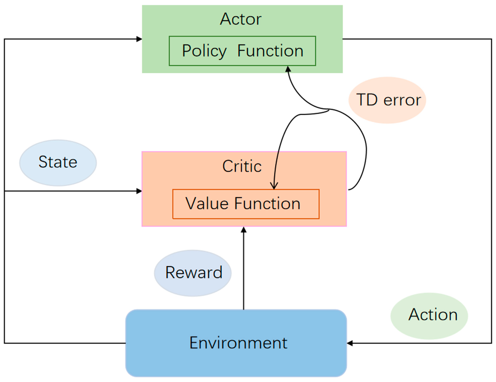

Actor-Critic 及其基线变种
Actor-Critic
由于 REINFORCE 算法使用蒙特卡洛方法对 qπθ(s, a) 进行估计，估计的方差较大，算法的稳定性较差。在 actor-critic 算法中使用 Q 网络 qw(s, a) 来近似 qπθ(s, a) 并通过时序差分进行更新，近似的策略梯度为：
∇θJ(θ)≈t=0∑Tγt∇θlnπθ(at∣st)qw(st, at)⟶γ=1t=0∑T∇θlnπθ(at∣st)qw(st, at)
使用时序差分方法对 Q 网络进行更新，损失函数即时序差分误差的平方，例如单步时序差分下：
ℓ(w)=21[gt(1)−qw(st, at)]2=21[rt+1+γqw(st+1, at+1)−qw(st, at)]2
固定时序差分目标 gt(1)（不考虑该项对 w 的梯度）后求损失函数 ℓ(w) 对 Q 网络参数 w 的梯度：
∇wℓ(w)=[qw(st, at)−gt(1)]∇wqw(st, at)=[qw(st, at)−rt+1−γqw(st+1, at+1)]∇wqw(st, at)
在实现时利用梯度在线地交替进行 Q 网络的更新（策略评估）和策略参数的更新（策略提升）
w←w−α∇wℓ(w)θ←θ+βqw(st, at)∇θlnπθ(at∣st)
同时考虑到自举带来的偏差累计和传播，可以加入目标网络 q~w−(s, a) 来切断自举，从而缓解偏差：
∇wℓ(w)=[qw(st, at)−rt+1−γq~w−(st+1, at+1)]∇wqw(st, at)
Advantage Actor-Critic（A2C）
将带基线的策略梯度改写为优势函数的形式：
∇θJ(θ)≈t=0∑Tγt∇θlnπθ(at∣st)[qπθ(t)(st, at)−vπθ(t)(st)]⟶γ=1t=0∑T∇θlnπθ(at∣st)dπθ(t)(st, at)
其中优势函数可以写作：
dπθ(t)(st, at)=qπθ(t)(st, at)−vπθ(t)(st)=Ert+1rt+1+γEst+1vπθ(t+1)(st+1)−vπθ(t)(st)
因此策略梯度可以通过采样轨迹和价值网络 vw(s) 近似为：
∇θJ(θ)≈t=0∑T∇θlnπθ(at∣st)[rt+1+γvπθ(t+1)(st+1)−vπθ(t)(st)]≈t=0∑T∇θlnπθ(at∣st)[rt+1+γvw(st+1)−vπθ(st)]
而对价值网络 vw(s) 进行训练时采用时序差分误差作为损失函数，例如单步时序差分下：
ℓ(w)=21[gt(1)−vw(st)]2=21[rt+1+γvw(st+1)−vw(st)]2
固定时序差分目标 gt(1)（不考虑该项对 w 的梯度）后求损失函数 ℓ(w) 对 V 网络参数 w 的梯度：
∇wℓ(w)=[vw(st)−gt(1)]∇wvw(st)=[vw(st)−rt+1−γvw(st+1)]∇wvw(st)
在实现时利用梯度在线地交替进行 V 网络的更新（策略评估）和策略参数的更新（策略提升）
w←w−α∇wℓ(w)θ←θ+β[rt+1+γvw(st+1)−vw(st)]∇θlnπθ(at∣st)

同样地，可以引入目标价值网络 v~w−(s) 来缓解自举偏差问题：
∇wℓ(w)=[vw(st)−gt(1)]∇wvw(st)=[vw(st)−rt+1−γv~w−(st+1)]∇wvw(st)
相应地，策略参数更新方式需要调整为：
θ←θ+β[rt+1+γv~w−(st+1)−vw(st)]∇θlnπθ(at∣st)
相比于带基线的 REINFORCE 算法，A2C 算法利用估计得到的状态价值函数 vw(s) 进一步估计了动作价值函数，减小了估计的方差，同时实现了采样过程中的在线更新，但引入了额外的偏差项。